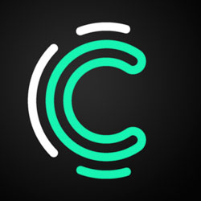

Hakkımda
Az ama öz...

ÖZET
Grafik ve arayüz tasarımı konusunda oldukça meraklı ve araştırmacı birisi olarak, yaklaşık 20 yıllık bilgisayar tecrübemi kullanıcı dostu grafik tasarımlar ve görseller üretmeye aktarıyorum.
ManagerScore
Proje Geliştirici
Teknik direktörlerin belirlenen veriler üzerinden performanslarını değerlendiren algoritma üzerinden kurulan proje.
ManagerScore
Grafik Tasarımcı
Projenin marka kimliği, logo, infografik, web sitesi ve banner tasarım aşamalarına dahil olma.
Kişisel Web Sitem
Web Tasarımcı
Güncel web tasarım teknikleri kullanarak sıfırdan sitenin oluşturulması.